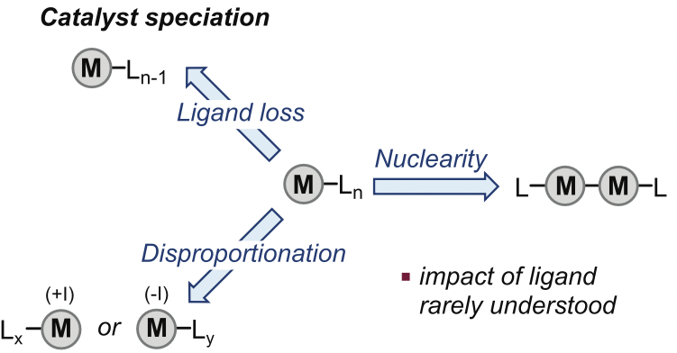
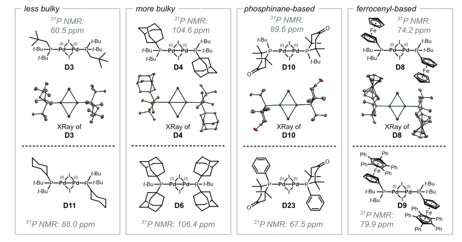

03c — 科研实战案例：用无监督共识聚类发现新型双核钯(I)催化剂

03c — 科研实战案例：用无监督共识聚类发现新型双核钯(I)催化剂
案例来源：Hueffel et al., "Accelerated dinuclear palladium catalyst identification through unsupervised machine learning", Science 374, 1134–1140 (2021)。
在前面的学习中，我们已经习惯了拥有上千个带标签样本（如 ESOL 的 1,128 个分子、AqSolDB 的 9,480 个分子）的理想场景。但在真实的合成化学与新材料探索前沿，科学家更常面临的是极端小样本困境（Extreme Low-Data Regime）：
- 文献中已知具有某种奇特催化活性或物相结构的正例只有寥寥 3–5 个；
- 传统的量子化学（DFT）计算单点自由能无法解释为什么有些分子行、有些分子不行；
- 样本量太少（4 个正例），任何监督学习分类器（随机森林、神经网络）都无法训练。
本节将完整复现 Schoenebeck 课题组发表在 Science 上的经典工作：看他们如何仅凭 K-means 聚类 + 1000 次随机重启共识打分 + 两阶段领域专属 DFT 描述符，从 348 个候选膦配体中将实验合成范围精准缩小到 21 个，并最终在实验室合成出 8 个全新的空气稳定双核 Pd(I) 催化剂。
# colab-setup (本地运行时自动跳过)
import os, sys
if "google.colab" in sys.modules:
_repo_dir = "/content/ai-for-materials"
if not os.path.exists(_repo_dir):
os.system("git clone --depth 1 https://github.com/Zeshengliu213/ai-for-materials.git " + _repo_dir)
os.chdir(os.path.join(_repo_dir, "03 - Unsupervised Learning"))
0. 环境准备
import os
import numpy as np
import pandas as pd
import matplotlib.pyplot as plt
from sklearn.cluster import KMeans
from sklearn.metrics import silhouette_score
from sklearn.preprocessing import StandardScaler, MinMaxScaler
plt.rcParams["figure.dpi"] = 110
📘 课程统一绘图风格：下面这格加载课程自带的
ai4m.mplstyle（配色与课程网站同源，无上右边框，仅横向浅网格，保存默认 300 dpi）。C是课程配色，手动指定颜色时写color=C.crimson。
# ai4m-style：课程统一绘图风格（本地与 Colab 通用）
import pathlib, sys
sys.path.insert(0, str(pathlib.Path.cwd().parent)) # course/ 根目录
import ai4m_style as ai4m
C = ai4m.use() # 应用 ai4m.mplstyle，返回课程配色
1. 科学问题背景：为什么常规理论与监督学习在这里双双失灵？
钯（Pd）催化的交叉偶联反应（如 Suzuki 偶联、Buchwald–Hartwig 碳氮偶联）是现代药物合成与有机光电材料（如噻吩聚合物、BTBT 衍生物、三苯胺空穴传输材料）制备的核心反应。
在催化循环中，钯催化剂究竟以什么活性物种形态（Speciation）存在，直接决定了反应活性与选择性：单核钯配合物可能发生配体解离、歧化，或者两个钯原子桥联形成双核二聚体（Dimer）：

研究团队关注的是一类极具应用价值的特殊物种——由两个碘原子桥联的双核一价钯配合物 \([\text{Pd}(\mu\text{-I})(\text{PR}_3)]_2\)。这类 \(\text{Pd(I)}\) 二聚体不仅在空气中异常稳定（易于储存和称量），而且在许多偶联反应中展现出独特的催化活性。然而在当时，化学界一共只知道 4 种大位阻膦配体能稳定形成这种 \(\text{Pd(I)}\) 二聚体，绝大多数膦配体都只会停留在常规的 \(\text{Pd(0)} / \text{Pd(II)}\) 路径：

更棘手的是，当研究者尝试用传统的量子化学 DFT 计算二聚化反应吉布斯自由能 \(\Delta G^\circ\) 来预测新配体时，发现热力学判据失灵了：例如著名的三环己基膦（\(\text{PCy}_3\)），其 DFT 计算出的二聚化自由能与那 4 个已知正例几乎完全处于同一水平，但在真实实验中却完全不形成 \(\text{Pd(I)}\) 二聚体：

核心挑战：面对包含 348 个商业可得或已知膦配体的候选库，在“只有 4 个正例、1 个明确反例（\(\text{PCy}_3\)）、且单一热力学指标失效”的局面下，如何决定下一批去实验室合成并测试哪些配体？
2. 膦配体知识库（LKB-P）与数据读取避坑
研究团队首先使用了物理有机化学中经典的膦配体知识库 LKB-P（Ligand Knowledge Base for Phosphorus donor ligands）。该数据库对 348 个膦配体在多种参考配合物环境（如与 \(\text{BH}_3\)、\(\text{AuCl}\)、\(\text{PdCl}_2\)、\(\text{PtCl}_2\) 配位）下进行了系统的 DFT 计算，提取出 28 个量化描述符，涵盖前线轨道能级（E(HOMO), E(LUMO)）、质子亲和能（PA）、He8 空间位阻参数（He8_steric）以及配位后的键长、键角与 NBO 电荷等，并预先附带了前 4 个主成分（PC1–PC4）和配体结构大类（Type：如烷基膦 R、芳基膦 Ar、亚磷酸酯 OR/OAr、氨基膦 NR2 等）。
DATA_DIR = "data"
if not os.path.exists(os.path.join(DATA_DIR, "LKB_P.csv")):
DATA_DIR = "."
if not os.path.exists(os.path.join(DATA_DIR, "LKB_P.csv")):
try:
from google.colab import files
print("请上传 LKB_P.csv 和 Dimer_LKB_P.csv")
files.upload()
except ImportError:
raise FileNotFoundError("找不到 LKB_P.csv，请确保它位于 data/ 文件夹或当前目录下")
# 关键细节：设置 index_col=0，将第一列配体编号 "No."（从 1 开始）设为 DataFrame 的行索引（Index）
ligands = pd.read_csv(os.path.join(DATA_DIR, "LKB_P.csv"), sep=";", index_col=0)
print(f"成功读取 LKB-P 数据库: 共 {len(ligands)} 个膦配体，{ligands.shape[1]} 列")
ligands.head()
ligands["Type"].value_counts()
在论文中，已知能形成 \(\text{Pd(I)}\) 二聚体的 4 个正例配体编号为 [16, 41, 54, 113]，已知不能形成二聚体的反例 \(\text{PCy}_3\) 编号为 [21]：
POSITIVE = [16, 41, 54, 113] # 已知能形成 Pd(I) 二聚体的 4 个正例配体编号
NEGATIVE = [21] # 已知不形成二聚体的反例 PCy3 编号
ligands.loc[POSITIVE + NEGATIVE, ["Type", "E(HOMO)", "He8_steric", "PA"]]
数据处理避坑指南：配体编号（
.loc）vs 行位置（.iloc）的“差一位”陷阱 在第一讲01b中我们专门强调过df.loc（按标签索引）和df.iloc（按 0 起始的整数行号索引）的区别。LKB_P.csv的第一列No.是从1开始的配体编号。如果读取 CSV 时忘记写index_col=0，再直接用编号[16, 41, 54, 113]去切片，就会把“第 16 号配体”错当成“第 17 行（编号 17 的配体）”！这种“差一位（Off-by-one）”的静默错误在科研代码中极其常见——程序完全不会报错，但筛选出的分子名单会彻底偏离原论文。这里我们通过index_col=0并统一使用.loc严格按配体编号索引，从而保证后续每一步结果与 Science 原论文代码分毫不差。
3. 为什么只看二维 PCA 图帮不上忙？
拿到高维描述符后，最自然的想法是先像 03a 那样画一张二维 (PC1, PC2) 化学空间散点图，看看 4 个正例（黑圈）和反例 \(\text{PCy}_3\)（红框）落在哪里：
fig, ax = plt.subplots(figsize=(7, 5))
for name, group in ligands.groupby("Type"):
ax.scatter(group["PC1"], group["PC2"], s=16, alpha=0.8, label=name)
ax.scatter(
ligands.loc[POSITIVE, "PC1"], ligands.loc[POSITIVE, "PC2"],
s=200, facecolors="none", edgecolors="black", linewidths=2.2, label="Forms Pd(I) dimer (+)"
)
ax.scatter(
ligands.loc[NEGATIVE, "PC1"], ligands.loc[NEGATIVE, "PC2"],
s=200, marker="s", facecolors="none", edgecolors="red", linewidths=2.2, label="PCy3: No dimer (-)"
)
ax.set_xlabel("PC1")
ax.set_ylabel("PC2")
ax.legend(fontsize=8, ncol=2)
ax.set_title("LKB-P Phosphine Ligands in 2D PCA Space")
plt.tight_layout()
plt.show()
观察上面的 PCA 图，很快就会发现两个致命问题：
- 正反例混杂：反例 \(\text{PCy}_3\)（红框）就紧挨着正例黑圈，在前两个主成分构成的平面上根本无法把它们区分开；
- 候选过多：4 个正例分布在烷基膦（
R）区域的不同位置，周围密密麻麻围着上百个配体，没法靠肉眼在二维图上画圈筛选。
原因很容易理解：PCA 的前两个主成分只负责拉开整个数据库中差异最悬殊的大类（例如把右下角的亚磷酸酯 OAr 和左上角的烷基膦 R 拉开），而决定两个烷基膦“能不能形成 \(\text{Pd(I)}\) 二聚体”的微妙立体与电子协同效应，隐藏在 28 维全空间的细微组合中，在压缩到二维时被折叠丢失了。
4. 第一轮筛选：在 28 维空间中用共识聚类（Consensus K-means）锁定稳定近邻
既然二维投影丢失了关键细节，我们就应该直接在 28 维标准化描述符全空间里用聚类寻找与 4 个正例同属一簇的配体。
4.1 真实科研数据上的簇数 \(k\) 选择：当肘部与轮廓系数不再明显
我们先剔除类别标签列 Type 和现成的主成分列 PC1–PC4，将纯的 28 个 DFT 描述符做 StandardScaler 标准化，然后画出 \(k = 2, \dots, 14\) 的 Inertia 和轮廓系数曲线：
drop_cols = ["Type", "PC1", "PC2", "PC3", "PC4"]
X = pd.DataFrame(
StandardScaler().fit_transform(ligands.drop(columns=drop_cols)),
index=ligands.index,
)
print(f"第一轮用于聚类的 DFT 描述符维度: {X.shape[1]}")
ks = range(2, 15)
inertias, silhouettes = [], []
for k in ks:
model = KMeans(n_clusters=k, n_init=10, random_state=1).fit(X)
inertias.append(model.inertia_)
silhouettes.append(silhouette_score(X, model.labels_))
fig, axes = plt.subplots(1, 2, figsize=(10, 3.5))
axes[0].plot(ks, inertias, "o-")
axes[0].set_xlabel("Number of Clusters k")
axes[0].set_title("Inertia on 28D LKB-P Descriptors")
axes[1].plot(ks, silhouettes, "o-", color="tab:red")
axes[1].set_xlabel("Number of Clusters k")
axes[1].set_title("Silhouette Score")
plt.tight_layout()
plt.show()
正如我们在 03b 中预告的那样：在真实的 348 个膦配体数据上，Inertia 曲线平滑下降，没有任何明显的“手肘”；轮廓系数整体偏低（0.14 ~ 0.25）。虽然 \(k=2\) 时轮廓系数最高，但如果只分成 2 簇，正例所在的簇会包含近两百个配体，完全起不到缩小实验范围的作用。
论文作者结合化学领域先验做出了选择：既然数据库中配体原本就按化学官能团分为 8 个结构大类（Type），且 \(k = 5 \sim 10\) 之间的轮廓系数几乎持平，第一轮便选定 \(k = 8\)。
4.2 单次 K-means 的随机波动问题
选定 \(k = 8\) 后，如果我们跑一次 K-means，把“与任意一个正例分在同一个簇”的配体全都捞出来，结果有多稳定？我们换 5 个不同的随机种子（seed = 0, 1, 2, 3, 4）试一试：
def members_with_refs(X, refs, k, seed):
"""运行一次 K-means，返回与参考正例 refs 落在同一个簇中的所有配体编号集合"""
labels = pd.Series(KMeans(n_clusters=k, n_init=10, random_state=seed).fit_predict(X), index=X.index)
ref_clusters = labels.loc[refs].unique()
return set(labels.index[labels.isin(ref_clusters)])
for seed in range(5):
members = members_with_refs(X, POSITIVE, k=8, seed=seed)
print(f"seed = {seed}: 共 {len(members):3d} 个配体与正例同簇 | 反例 PCy3 (#21) 混入了吗？{21 in members}")
可以看到：由于 348 个配体在 28 维空间中并没有截然分开的边界，每次改变随机种子，簇边界就会发生轻微移动，导致与正例同簇的配体数量在 80 多个到 120 多个之间剧烈波动！显然，凭单次 K-means 的结果去决定花几个月合成哪些分子是不草率的。
4.3 化劣势为优势：运行 1,000 次 K-means 统计共识共聚频率（Score）
既然单次 K-means 的簇边界存在随机扰动，论文作者提出了一个非常巧妙的**集成/共识聚类（Consensus Clustering）**思路：
用 1,000 个不同的随机种子独立运行 1,000 次 K-means（每次都随机重排初始质心），统计每个候选配体在这 1,000 次划分中与 4 个已知正例分在同一个簇的频率（记为
Score\(\in [0, 1]\)）。
- 如果一个配体的
Score接近1.0，说明无论初始质心怎么变、簇边界怎么切，它在 28 维空間里都与正例紧紧绑在一起（高置信度的真近邻）； - 如果一个配体只是偶然处在簇边界上，它在 1,000 次里只会偶尔与正例同簇，
Score自然会很低。
下面运行这 1,000 次 K-means（约需 20–30 秒），看看全体配体的 Score 分布以及反例 \(\text{PCy}_3\) 的得分：
def cluster_score(X, refs, k, n_runs=1000):
"""运行 n_runs 次不同随机种子的 K-means，统计每个样本与参考正例 refs 同簇的频率"""
counts = pd.Series(0, index=X.index)
ref_pos = X.index.get_indexer(refs)
for seed in range(n_runs):
labels = KMeans(n_clusters=k, n_init=10, random_state=seed).fit_predict(X)
ref_clusters = np.unique(labels[ref_pos])
counts += np.isin(labels, ref_clusters)
return counts / n_runs
score = cluster_score(X, POSITIVE, k=8, n_runs=1000)
plt.figure(figsize=(5.8, 3.4))
plt.hist(score, bins=20)
plt.axvline(0.75, color="tab:red", ls="--", label="Selection Threshold = 0.75")
plt.xlabel("Consensus Score (Fraction of 1,000 runs clustered with positives)")
plt.ylabel("Number of Ligands")
plt.title("First-Round Consensus Clustering Score Distribution")
plt.legend()
plt.tight_layout()
plt.show()
print("4 个已知正例自身的 Score:", score.loc[POSITIVE].tolist())
print("反例 PCy3 (#21) 的 Score:", round(score.loc[21], 3))
直方图呈现出非常漂亮的两极分化分布：绝大多数配体的 Score 要么接近 0（从不与正例同簇），要么接近 1（总是与正例同簇）。
最关键的突破在于：此前二维 PCA 图和单一 DFT 自由能都无法排除的反例 \(\text{PCy}_3\)，在 28 维空间的 1,000 次共识聚类中 Score 只有 0.247！
按照论文设定，第一轮保留 Score > 0.75 的配体：
THRESHOLD = 0.75
selected = score[score > THRESHOLD].index
print(f"第一轮入选 (Score > {THRESHOLD}): 共 {len(selected)} / {len(ligands)} 个配体 | PCy3 在内吗？{21 in selected}")
ligands.loc[selected, "Type"].value_counts()
第一轮筛选成功将 348 个候选配体浓缩到了 78 个（淘汰了近 80%），并且稳稳排除了反例 \(\text{PCy}_3\)。同时可以看到，入选的 78 个配体虽然以烷基膦（R，48 个）为主，但也跨家族纳入了芳基膦（Ar，13 个）和氨基膦（NR2，14 个），打破了“只挑结构长相一样的配体”的传统思维局限。
🏋️ 练习 03c-1：第一轮筛选阈值（Threshold）的敏感性分析
论文第一轮选择了 THRESHOLD = 0.75。
- 请计算当阈值从
0.05到0.95（步长0.05）变化时入选配体的数量，画出“入选配体数 vs 阈值”曲线，并在图上用竖虚线标出反例 \(\text{PCy}_3\) 的得分位置（score.loc[21]）； - 分别打印阈值取
0.5, 0.75, 0.9, 0.99时的入选配体数，体会为什么0.5 ~ 0.9之间结果相当稳健。
# 在下方填写你的代码：
5. 第二轮精选：引入二聚体专用 DFT 描述符，将候选集收敛至 21 个
对于有机合成实验室而言，78 个配体逐一合成并做单晶表征依然工作量太大。为什么第一轮没法筛得更少？
因为第一轮使用的 LKB-P 数据库是通用单核配体描述符（描述的是配体本身或与单核金属配位时的平均性质），并不包含两个钯原子形成二聚体时的特异性空间拥挤与成键信息。
于是，研究团队在第一轮缩小范围的基础上，针对其中的含碳膦配体（共 66 个，保存在 Dimer_LKB_P.csv 中）专门计算了一套包含 36 个二聚体专属 DFT 描述符的新特征集——包括 \(\text{Pd–Pd}\) 键级、\(\text{Pd–I–Pd}\) 桥角、二聚体解离能、单重态-三重态能隙以及二聚体中间体的 NBO 电荷分布等。
第二轮按照论文设置：使用 MinMaxScaler 将 36 个二聚体描述符缩放到 [0, 1] 区间，设簇数 \(k = 6\)，再次运行 1,000 次 K-means，取 Score > 0.5 的配体作为最终实验合成清单：
dimers = pd.read_csv(os.path.join(DATA_DIR, "Dimer_LKB_P.csv"), sep=";", index_col=0)
print(f"第二轮二聚体专用数据库: 共 {dimers.shape[0]} 个配体，{dimers.shape[1]} 列")
print(f"其中属于第一轮 78 个入选名单的有: {dimers.index.isin(selected).sum()} 个")
print(f"4 个正例是否全在表内？{all(p in dimers.index for p in POSITIVE)} | PCy3 (#21) 是否在表内？{21 in dimers.index}")
drop_dimer = ["Type", "PC1", "PC2", "PC3", "PC4", "PC1'", "PC2'", "PC3'", "PC4'"]
X_dimer = pd.DataFrame(
MinMaxScaler().fit_transform(dimers.drop(columns=drop_dimer)),
index=dimers.index,
)
print(f"第二轮用于聚类的二聚体专用描述符维度: {X_dimer.shape[1]}")
score_dimer = cluster_score(X_dimer, POSITIVE, k=6, n_runs=1000)
candidates = score_dimer[score_dimer > 0.5].index
new_candidates = [c for c in candidates if c not in POSITIVE]
print(f"第二轮 Score > 0.5 入选总数: {len(candidates)} 个（含 4 个已知正例，全新候选配体 {len(new_candidates)} 个）")
print("21 个全新候选配体的编号:", new_candidates)
经过两轮漏斗式无监督筛选，候选配体从最初的 348 个 → 第一轮 78 个 → 第二轮 21 个全新候选（仅占初始库的 6%），成功压缩到了一个博士生可以在短期内逐一合成验证的规模！
🏋️ 练习 03c-2：检验第二轮结果对簇数 \(k\) 的稳健性
在第二轮中，如果把簇数分别设为 \(k = 4, 6, 8, 10\)（为节省时间可设 n_runs=200），统计 Score > 0.5 的新候选配体数量，以及它们与上面 \(k=6\) 选出的 21 个候选名单的重合个数。观察核心候选名单是否随 \(k\) 剧烈变化。
# 在下方填写你的代码：
🏋️ 练习 03c-3：对比 StandardScaler 与 MinMaxScaler 对聚类结果的影响
论文第一轮使用了 StandardScaler（均值为 0、标准差为 1），第二轮使用了 MinMaxScaler（压缩到 [0, 1]）。
- 请把第二轮的特征缩放也换成
StandardScaler()（设k=6, n_runs=200），看看选出的新候选配体有几个？原来的 21 个候选是否全部保留了下来？ - 思考：为什么在包含极端离群值的特征列上，
MinMaxScaler和StandardScaler会改变该特征在 K-means 欧氏距离中的话语权？
# 在下方填写你的代码：
6. 实验验证与方法论启示
研究团队在实验室中对第二轮筛出的候选配体进行了合成与反应测试，一举发现了 8 个此前从未报道过的新型 \(\text{Pd(I)}\) 二聚体配合物（将人类已知的该类活性催化剂数量直接扩充了两倍），并通过 X 射线单晶衍射确认了它们的晶体结构：

更令人振奋的是，这 8 个新发现的配体结构跨度极大：既有空间位阻比传统 \(\text{P}(t\text{-Bu})_3\) 更小的配体，也有位阻更大的金刚烷基膦；既有含酮羰基的磷杂环，甚至还有二茂铁基膦（Ferrocenyl phosphine）——按传统金属有机化学家的经验直觉，这些配体原本根本不会被列入尝试名单。
从这项 Science 工作中学到的四条材料信息学经验
- 小样本困境下，用“无监督近邻共识”替代监督学习：当正例只有 4 个时，强行训练分类器必然严重过拟合；把问题转化为“在高维物理化学特征空间里寻找与已知正例稳定聚在一起的邻居”，是破解极小样本材料发现的通用范式。
- 用集成思想（Consensus Clustering）消除算法随机性：单次 K-means 受初始质心影响很大，但重复 1,000 次统计共聚频率（
Score），不仅消除了随机噪声，还自然给出了候选分子的优先级排序。 - 两阶段“粗筛 + 精筛”漏斗策略：第一轮用现成、廉价的通用描述符（LKB-P）快速砍掉 80% 不相干的分子；第二轮只对剩下的候选分子计算昂贵的领域专用 DFT 描述符（Dimer-LKB-P），兼顾了计算成本与物理分辨率。
- 机器学习不是取代实验，而是提高实验命中率：从 348 个配体缩小到 21 个，实验命中率达到约 40%（8 / 21），将原本大海捞针式的试错变成了高命中率的靶向合成。
小结：第三讲（无监督学习）知识全景
| 模块 | 核心方法 | 解决的化学与材料问题 |
|---|---|---|
03a 降维与可视化 |
PCA（线性，保留全局方差与载荷解释）t-SNE（非线性，保留局部近邻岛屿） |
绘制高维化学空间地图、诊断冗余共线特征、定位新分子适用域、发现表征盲区与性质悬崖 |
03b 聚类与数据划分 |
KMeans、DBSCAN、Butina 球形排除聚类GroupKFold 按簇交叉验证 |
自动划分分子结构家族、挑选高多样性代表分子、构建严格阻断同系物泄漏的外推评估集 |
03c 催化剂发现案例 |
两阶段 DFT 描述符 + 1,000 次共识 K-means | 仅凭 4 个已知正例，从 348 个膦配体中靶向筛出 21 个候选并实验证实 8 个新型 \(\text{Pd(I)}\) 二聚体 |
下一讲预告
在 03c 中，研究团队通过两轮无监督聚类筛出了 21 个候选配体，然后一次性去实验室做了测试。但在很多材料配方优化与合成条件探索（如钙钛矿组分比例、有机太阳能电池退火温度与添加剂浓度）中，实验是一轮一轮迭代进行的：每做完几个实验，我们就拿到了新的测量数据。
如果每次实验都非常昂贵，模型能不能不仅给出预测值，还能同时给出预测的不确定度（Uncertainty），从而智能地平衡“去把握最大的地方深挖（Exploitation）”与“去没探索过的未知区域探路（Exploration）”，告诉我们下一轮最值得做哪一个实验？
这就是下一讲 04 - Bayesian Optimization（高斯过程、贝叶斯优化与主动学习） 要解决的核心问题。